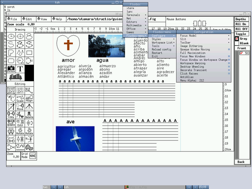

La operación básica de este liviano y estético administrador de ventanas se describe en basico_adJ, aquí describimos algunos detalles de configuración.
Para emplearlo como administrador de ventanas por defecto debe
modificarse ~/.xsession, así como en
~/.xinitrc y agregar al final:
if (test -x /usr/local/bin/startfluxbox) then {
/usr/local/bin/startfluxbox
} fi;
Una vez en operación podrá realizar diversas configuraciones
oprimiendo el botón derecho sobre el escritorio en el menú
fluxbox menu. Por ejemplo podrá cambiar estilos
en System Styles y esconder/mostrar la barra de
herramientas con
Configure -> Toolbar -> Visible FluxBox

Entre sus características:
Es altamente configurable (recursos, menús, decoración de ventanas y estilos).
Es muy liviano, requiere alrededor de 4MB en RAM.
Con Alt+[Botón izquierdo] permite cambiar ubicación de la ventana sobre la que está el curso, y con Alt+[Botón derecho] el tamaño.
El menú que presenta se configura en un archivo texto con una
sintaxis sencilla, puede cambiarse editando en
~/.fluxbox/menu.
Los programas que se inician con el escritorio pueden
configurarse en ~/.fluxbox/startup. Por
ejemplo en este archivo puede configurar el locale que usará
agregando o cambiando la línea:
export LANG=es_CO.UTF-8
La apariencia en general puede configurarse en
~/.fluxbox/init
Puede configurar teclas rápidas en el archivo
~/.fluxbox/keys
Sitio oficial fluxbox.org.
Página sobre fluxbox de NetBSD http://wiki.netbsd.org/fluxbox/
Página sobre fluxbox de Gentoo http://www.gentoo.org/doc/es/fluxbox-config.xml
La operación básica se describe en basico_adJ, aquí describimos algunos detalles de configuración.
El archivo de configuración se ubica en
~/.config/xfe/xferc. La mayoría de
posibilidades se configuran desde Editar > Preferencias, sin
embargo para que opere bien Herramientas > Ventana superusuario
nueva en adJ el archivo de configuración en la sección
OPTIONS debe incluir:
uso_sudo=1 sudo_nopasswd=1